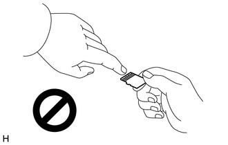

PRECAUTION FOR DISCONNECTING CABLE FROM NEGATIVE AUXILIARY BATTERY TERMINAL
Note
After the power switch is turned off, the navigation receiver assembly records various types of memory and settings. As a result, after turning the power switch off, make sure to wait at least 60 seconds before disconnecting the cable from the negative (-) auxiliary battery terminal.
When disconnecting the cable from the negative (-) auxiliary battery terminal, initialize the following systems after the terminal is reconnected.
| System Name | See Procedure |
|---|---|
| Lane Departure Alert System (w/ Steering Control System) | |
| Intelligent Clearance Sonar System | |
| Parking Assist Monitor System | |
| Simple Intelligent Parking Assist System | |
| Power Door Lock Control System | |
| Pre-crash Safety System | |
| Adaptive High Beam System |
PRECAUTIONS FOR SD CARD (DISC PLAYER DISC)
The navigation system uses an SD card (disc player disc) containing data such as map data.
Precaution for removing the SD card (disc player disc).
Note
The SD card (disc player disc) contains map data and various programs for the navigation system.
Without the SD card (disc player disc) inserted, the navigation system will not operate normally. Therefore, remove the SD card (disc player disc) only when necessary, such as when updating the map data.
After removing the SD card (disc player disc), do not insert any other object into the SD card (disc player disc) slot.
When inserting the SD card (disc player disc) into the SD card (disc player disc) slot, make sure that the SD card (disc player disc) is free of foreign matter.
After inserting the SD card (disc player disc), make sure that it is securely inserted into the SD card (disc player disc) slot.
Before removing the SD card (disc player disc), make sure that the power switch is turned off.
Precaution for handling the SD card (disc player disc).
Note

Do not touch the terminals with your hand or a metal object.
If a strong force is applied to the SD card (disc player disc), it may be damaged.
Do not leave the removed SD card (disc player disc) in any of the following environments. If the SD card (disc player disc) is affected adversely, it may result in a malfunction in the navigation system.
Places where static electricity or electronic noise is generated.
Places which are hot or humid.
Places where the SD card (disc player disc) may be exposed to direct sunlight.
Places where condensation occurs.
Places which are prone to corrosion.
Do not use the SD card (disc player disc) if the label has peeled off or someone has put a sticker or other label on the SD card (disc player disc).